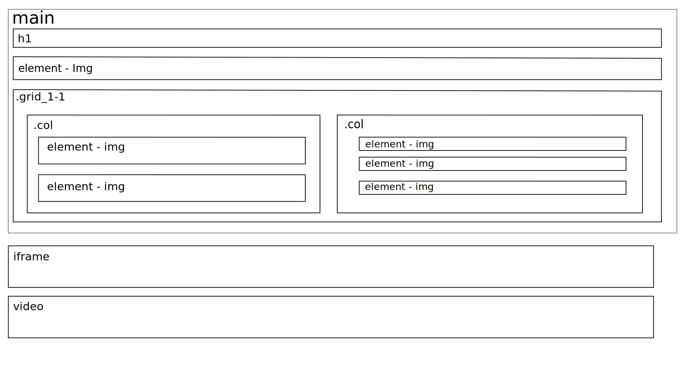
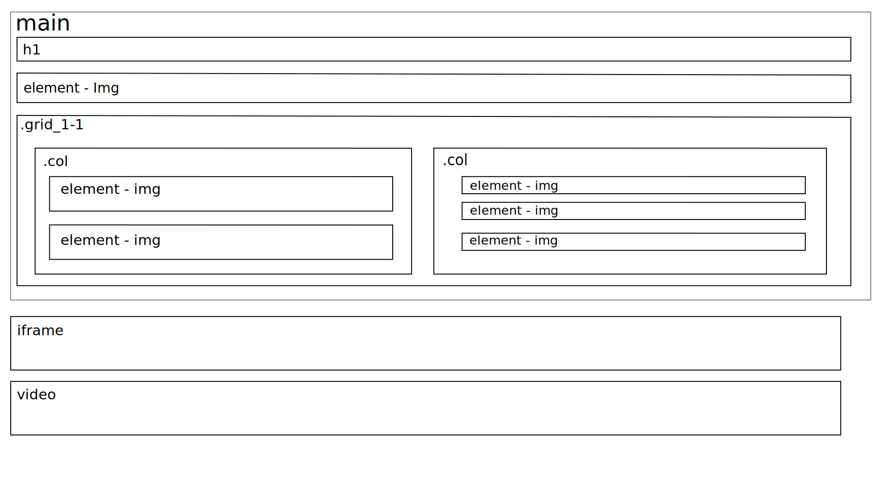

Marmorering som kunst
Marmorering vil sige at man imitere forskellige marmorsorter ved hjælp af maling. Oven på en fuldt dækkende bund i en passende farve, opbygger man med flere lag laserende farve den enkelte marmorsorts karakteristiske tegning. Til slut kan gives et beskyttende lag lak, men det er ikke strengt nødvendigt medmindre man ønsker en blank overflade.


 

© Medvirkende - Ida Brockmann ©